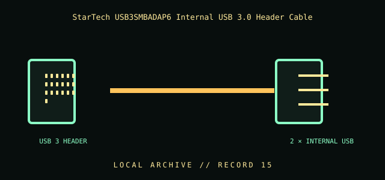

[ INDIVIDUAL COMPONENT // CABLES & ADAPTERS ]
StarTech USB3SMBADAP6 Internal USB 3.0 Header Cable
An internal SuperSpeed USB 3.0 cable assembly that connects two compatible internal USB devices to a motherboard header. It is distinct from a USB 2.0 9-pin header lead.

IDENTIFICATION / SAFETY: Match the complete part number, connector direction, host requirements, and revision to manufacturer documentation. A matching connector shape is not proof of protocol or electrical compatibility.
Specifications
| Catalog subcategory | Internal front-panel cables |
|---|---|
| Catalog identity | StarTech.com USB3SMBADAP6 USB 3.0 motherboard-header adapter cable |
| Protocol / standard | StarTech model USB3SMBADAP6; internal USB 3.0 motherboard-header connection for two internal USB 3.0 devices, as identified by the manufacturer. Verify exact connector arrangement and revision against product documentation. |
| Connector ends | USB 3 HEADER → 2 × INTERNAL USB; direction and gender are specified where the manufacturer source verifies them. |
Compatibility & electrical hazards
Use only with the matching USB 3.0 motherboard header and keyed orientation. Do not substitute a USB 2.0 or IEEE 1394 header cable, or assume similar-looking headers are compatible. Do not force misaligned pins; confirm the header’s pin assignment and supported port count in the motherboard documentation.
Archival & handling notes
Preserve the cable with its exact model and board context. Check the key, pin condition, cable jacket, and bend at the header before installation; support internal modules so their weight does not stress the connector.
For collection records, photograph both connector faces and all labels; record manufacturer, complete SKU, revision, provenance, condition, and the source document used for identification. Do not apply power to an unidentified or damaged cable.
Sources & further reading
- StarTech — USB3SMBADAP6 internal USB 3.0 header cableManufacturer identifies two internal USB 3.0 devices and the motherboard-header connection.
- USB-IF — USB 3.0 / USB 3.2 documentationStandards source for USB SuperSpeed generations; board header pin assignment remains motherboard-specific.
Source values are limited to the linked manufacturer or standards documentation. Features not stated there are intentionally left unspecified; confirm the exact cable revision and host-device manuals before use.